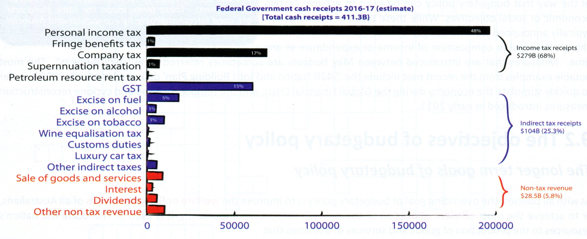
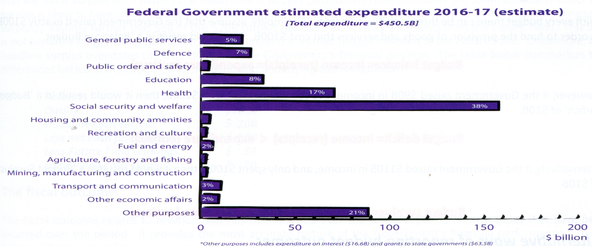
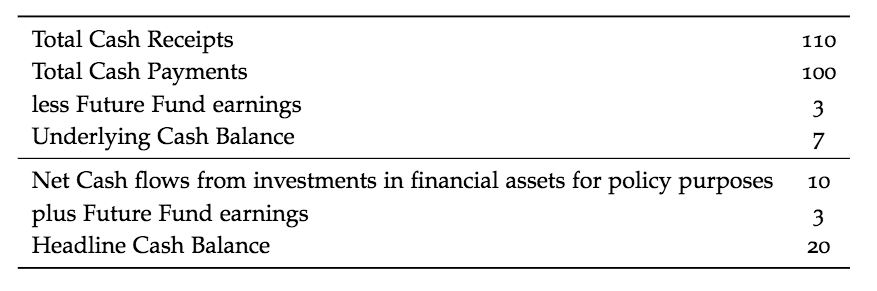

Econ Unit 4
Table of Contents
- 1. Nature and Operation of Budgetary Policy
- 1.1. Definition
- 1.2. Objectives
- 1.3. Composition of Revenue and Expenses
- 1.4. Budget Outcomes
- 1.5. Automatic and Discretionary Stabilisers
- 1.6. Fiscal Drag / Bracket Creep
- 1.7. Actual and Estimated Budget Outcomes
- 1.8. Expansionary v. Contractionary Budgets
- 1.9. Financing a Deficit / Investing a Surplus
- 1.10. TODO Budget and Economic Goals
- 1.11. TODO Budgetary Policy and Living Standards
- 1.12. Strengths and weaknesses of Budgetary Policy
- 2. Budgetary policy in Action
- 3. TODO Monetary Policy
- 4. TODO Monetary Policy in Action
1 Nature and Operation of Budgetary Policy
1.1 Definition
Budgetary policy (Also known as Fiscal Policy) refers to the manipulation of the level and composition of Federal Government receipts and outlays in order to assist in the achievement of its economic and social goals for Australia. It is released annually each May and contains estimates or projections of all income and expenditure of the Government into the future. Though introduced in May, new measures or 'mini budgets' can be taken by the Government.
1.2 Objectives
The goal of all policies is to improve the welfare or living standards of all Australians and to achieve the most efficient allocation of the nation's resources.
This is achieved by:
- Strong and sustainable economic growth
- Low inflation
- Full Employment
This is clearly articulated in Government legislation (Charter of Budget Honesty Act 1998)
The Government's fiscal policy is to be directed at maintaining the on-going economic prosperity and welfare of the people of Australia and is therefore to be set in a sustainable medium-term framework.
1.3 Composition of Revenue and Expenses
The Federal Government collects approximately $411 billion per annum in receipts from various sources.


1.4 Budget Outcomes
The Budget can have three possible outcomes:
\begin{align*} \text{Budget Balance} &= \text{Income(receipts)} = \text{Expenditure(outlays)}\\ \text{Budget Deficit} &= \text{Income} < \text{Expenditure}\\ \text{Budget Surplus} &= \text{Income} > \text{Expenditure} \end{align*}There are also several ways the Commonwealth Government will report these outcomes.
1.4.1 Headline Cash Outcome
This is the total cash received by the Federal Government subtracted by the total cash paid. This can be misleading as it includes cash flows that do not directly impact on the economy.
1.4.2 Underlying Cash Outcome
This is the total cash received by the Federal Government subtracted by the total cash paid. This can be misleading as it includes cash flows that do not directly impact on the economy.
- Future Fund Earnings
- - interest and dividends earned by government owned 'Future fund'. Excluded as earnings are mandated to be reinvested.
- IFAAP
- - Investments in financial assets for policy purposes; including sale of government business enterprise (GBE), purchases of shares by the government or granting or repaying State Government debt. Excluded as does not directly add to economic activity
To illustrate (using hypothetical figures):

1.5 Automatic and Discretionary Stabilisers
Stabilisers - help to dampen the severity of booms and recessions in the business cycles.
2 types:
- Discretionary
- fiscal / budgetary policy determined by the government as per the annual budget
- Automatic
- changes to the budget that occur automatically following changs in the level of economic activity
1.5.1 Autmoatic
- Boom
- rising AD → higher employment, incomes and
profits
- Government tax revenues increases and welfare spending decreases
- Fiscal system is automatically becoming contractionary
- Recession
- falling AD → higher unemployment,
lower incomes and profits.
- Government tax revenues decreases and welfare payments increases
- Fiscal situation is automatically becoming expansionary
Discretionary stabilisers are used when the automatic stabiliser are not enough to correct a server boom or recession.
1.6 Fiscal Drag / Bracket Creep
This occurs during times of inflation for countries with a progressive tax system. When inflation occurs there is a decrease in the real wage and workers will demand an increase in nominal wage to keep up with inflatiion.
When the nominal wage increases, some workers are pushed into a higher marginal tax bracket which increases the 'average' rate of tax paid.
These have two effects:
- Increases the total personal income tax revenue received by the Federeal Government.
- Some taxpayers will experience a decline in their real disposable income because they will be paying a higher average rate of tax.
1.7 Actual and Estimated Budget Outcomes
The Department of Treasury releases the 'actual' budget figures for the previous financial year in September or October (16 months after the release of the budget).
- Estimated budget outcome
- - released in May
- Actual budget outcome
- - released in September or October
The estimated budget outcome heavily relies on forecasts for economic growth and other statistic which are never 100% accurate.
| Year 2 | |
|---|---|
| Receipts | $100B |
| Outlays | $120B |
| Headline cash deficit | $20B |
We have a budge tdeficit of $20B for year 2 and we prepare the Budget for year 3, where a budget deficit of only $3B is estimated. This estimated deficit is clearly dependan on the discretionary changes the government expects to make to the budget, as well as any anticipated changes to the cyclical component of the budget. It is also expected the the economic growth for year 3 to be an estimated healthy 4%.
However, what would happen to the 'actual' budget outcome if economic growth was much lower? The actual deficit will be higher because the government overestimated tax receipts and understimated outlays. Not only will the budge tforecasts be inaccurate but any additional 'discretionary' changes made to the budget after its release in May will further widen the difference between the estimated and actual budget outcomes.
The most recent example of this is during the 2014-2015 Budget where the underlying budget deficit was estimated to be of $29.8B ( based on the Treasury assumption of 3.0% growth in nominal GDP). During the course of the year economic conditions deteriorated as the terms of trade fell by more than anticipated nad actual growth was a much lower 1.6%. This caused the actual budget deficit to increase to $37.9B.
1.8 Expansionary v. Contractionary Budgets
1.8.1 Budget Deficit vs Budget Surplus
If the government has a 'balanced budget' every year, this means that it is neither contractionary nor expansionary in terms of its impacts on the economy.
If the government delivered a 'budget deficit' it means the Federal Government will be injecting more into the economy than it is taking out, meaning it will be expansionary.
If the government delivered a 'budget surplus' it means the Federal Government will be taking more from the ecnommy than it is injecting, meaning it will be contractionary
1.8.2 Changes to the size of the deficit or surplus
If the government delivers a bigger surplus than the year before, then it is liekly to be considered a more contractionary budgetary policy stance and a smaller surplus is likely to be considered a less contractionary stance.
In contrast, a bigger deficit is likely to more expansionary and a smaller deficit less expansionary.
However it is possible for an expansionary budget to occur even when the budget surplus increases or when a contractionary budget budget deficit increases.
The Budgetary Policy Stance is determined by how much of the change to the budget outcome occurred automatically and how much of the change was deliberate.
- Example
Year Outcome ($B) 1 +10 2 +20 If the economy was growing strongly in year 1 causing the surplus to rise, then the surplus will have occured for cyclical reasons without any changes to the discretionary budget.
- Example
Year Outcome ($B) 1 +10 2 +15 Instead the government wants to reducce this surplus to $15B in yera 2 via spending measures or tax cuts. The budget surplus has still increased from $10B to $15B, but the Budget would be considered an expansionary one because it delivered a net stimulus to AD.
1.9 Financing a Deficit / Investing a Surplus
1.9.1 Budget Deficit \(R < E\)
Expansionary \(\rightarrow\) Rise in AD which impacts on production, employment and inflation
The gap is financed by government borrowing:
- Borrow from public and financial sector by sale of bonds
- Borrow from the RBA
- Overseas borrowings
- Less a feature of budgetary policy since the late 1980s because the government and the RBA wanted a clear separation of monetary and budgetary policies.
- Bond sales place upward presssure on interest rates crowding out the private sector. They also result in local borrowers borrowing in overseas lenders causing a higher exchange rate (crowding out of the external sector).
- Results in capital inflow causing upward presssure on the AUD. Less common form of financing deficit.
1.9.2 Budget Surplus \(R > E\)
Contractionary \(\rightarrow\) Fall in AD
Use of surplus:
- Save with RBA
- Place in special investment or savings fund
- Repay local and foreign debt
1.9.3 Problems with an expansionary budget deficit
Budget deificits can lead to a build up of government (public) debt over time. This creates a potential problem for goernments in terms of the impact on government credit ratings. if downgraded this can lead to higher borrowing costs and a larger deficit.
Governments need to achieve the right balance by delivering deficits that do just enough to achieve its short to medium term goals without imposing too heavy a burden on taxpayers and the economy in the future.
1.9.4 Dealing witha budget surplus
While a deficit tends to contribute to crowding out, a surplus tends to do the opposite and contributes to crowding in of the private sector. A surplus means that the government becomes a net lender for that year and this leads to less pressure for funds in fincancial markets. Leading to a reduction in interest rates causing an increase in Consumption and Investment (Net exports).
1.9.5 Fiscal consolidation and the rationale for delivering a budget surplus
- Help buffer Austraia against future economic decline as surplus funds can be saved and then spent.
- Helps to generate greater international investor confidence in Australian government finances preserving Australia's AAA credit rating.
- Allows the cyclical component of the budget to do its job of automatically reducing the deficit as the economy recovers.
- Allows monetary policy to better manage the economy.
1.10 TODO Budget and Economic Goals
In terms of Australia's specific domestic macroeconomic goals, budgetary policy has a key role to play in the achieving of stability in the level of domestic economic activity (also referred to as Internal Stability)
1.10.1 Stablising the business cycle
1.10.2 Changing role of Budgetary Policy
1.10.3 Budgetary policy and low inflation
1.10.4 Budgetary policy and strong and sustainable growth
1.10.5 Budgetary policy and ull employment
1.11 TODO Budgetary Policy and Living Standards
1.12 Strengths and weaknesses of Budgetary Policy
1.12.1 Strengths
- Target particular sectors
- Greater range of economic goals
- Impact lag
- Effictively stimulating AD
- Effect through automatic stabilisers
- Checks and balances
1.12.2 Weakness
- Political hurdles
- Political bias
- Imlementation lag
- Inflexible
- Less effective at restricting AD during a boom
2 Budgetary policy in Action
2.1 Recent use of the budget
2.2 Evaluating the effectiveness of budgetary policy
2.3 Specific budgetary policy initiatives
3 TODO Monetary Policy
Relies on changing the level of interest rates to alter the cost, demand and availability of credit. It has fast impact and does not require the involvement of parliament.
3.1 Role of RBA:
- banker to the government, banks, and NBFIs (Non-bank Financial Institute)
- Issues notes and coins
- custodian of overseas currency reserves
Priority is low inflation; as it is a precondition to achieving consumer and business confidence.
RBA board meets monthly on Tuesday (except January), and considers the following economic data:
- Quarterly trends in headline CPI
- Spending levels (C), (I)
- Building approvals
- Household debt
- Unemployment rate
- Job vaccancies
- Participation
- Overseas markets
- Government budgetary stance.
Monetary Policy works in a counter cylical pattern.
3.2 Definition
Monetary policy is operated by the RBA on behalf of the government and involves the manipulation of key financial variables in the economy (primarily interest rates) in order to achieve specific economic goals and ultimately improve the living standards or welfare of all Australians. The medium term objective is 'stability of the currency', which the RBA currently defines as price stability, where consumer price inflation is kept between 2 and 3 per cent, on average, over time.
The RBA will only be concerned if inflation is outside the range for a 'sustained' period. Once low inflation is achieved, the RBA can then focus on policy decisions that assist in the attainment.
3.3 Objectives
- the stability of the currency of Australia
- the maintenance of full employment in Australia
- the economic prosperity and welfare of the people of the Australia.
Monetary policy will generally be useed in a counter-cyclical way to boost activity when inflation and growth are low and restrain activity when inflation and growth are high.
3.3.1 Underlying rate of Inflation
3.3.2 Financial Stability
3.4 Implementation
3.5 Cash rate and Open Market Operations
The RBA manipulates the cash rate by buying and selling Commonwealth Government Securities (CGS) or repurchase agreements (repos) to participants in the cash market (primarily banks). This manipulation of the cash market is commonly referred to as open market operations (OMOs) or domestic market operations.
3.5.1 Diagram 11.1 Pg 310
3.5.2 Target Cash Rate
3.6 Monetary Policy Tightening / Loosening
3.7 Monetary Policy Settings
3.8 Tranmission Mechanism
3.8.1 Cost of Credit Channel (Savings and Investment)
3.8.2 Cash Flow Channel
3.8.3 Availability of Money / Credit Channel
3.8.4 Asset Values / Asset Price Channel
3.8.5 Exchange Rate Channel
3.9 Exchange rate intervention
3.10 Strengths and weeknesses of Monetary Policy
3.10.1 Strengths
- Free from political bias
- Short Implementation lag
- Powerful influence on consumers, investors, borrowers or lenders
- Good at restraining AD as policy reduces discretionary income of indebted households.
3.10.2 Weaknesses
- Is one dimensional and unable to concentrate its affect on a speicific area
- Full impact can take up to two years (Impact lag)
- RBA does not have direct control over interest rates. This could mean financial insitutions won't pass on 'in full' the reductions in the cash rate.
- A reduction in interest rates may not immediately increase AD because consumers are not forced to spend any increase in discretionary income.
- Policy becomes less effectve as levels of private sector indebtedness increase to high levels.
- Policy cannot directly reduce inflationary pressures that are generated from the supply side of the economy (cost inflation). This will instead only ignite demand inflationary pressures, worsening inflation overall.
4 TODO Monetary Policy in Action
4.1 Price Stability
4.2 Stronger Economic Growth and Employment
4.3 Stabilisation of the Business Cycle
4.4 Living Standards
4.5 Specific Policy Changes Over the Cycle
| Year | Policy Stance | Monetary Policy | Context |
| Late 2007 | Economic Growth relatively high. Economy capacity constraints. | ||
| Early 2008 | Restrictive | Inflaion 5% | |
| Mid 2008 | GFC | ||
| 2009 | Target rate falling to 'emergency levels' of 3% | ||
| November 2010 | RBA concerned about the emergence of capacity constraints and the implications for inflation | ||
| 2011 | Restrictive | ||
| 2011-2012 | Loosened | Reduced target cash rate back to 3% by December by 2012 | |
| 2013 | Loosened | Target cash rate 2.5% by August 2013 | |
| 2014 | Target cash rate remained at 2.5% through 2014 | 'Persistance' with expansionary stance | |
| 2015 | Falling TOT, RBA felt stimulus was required | ||
| Late 2015 | Economy performing relatively poorly, economic growth below trend, Unemployment at 6.3% August 2015 | ||